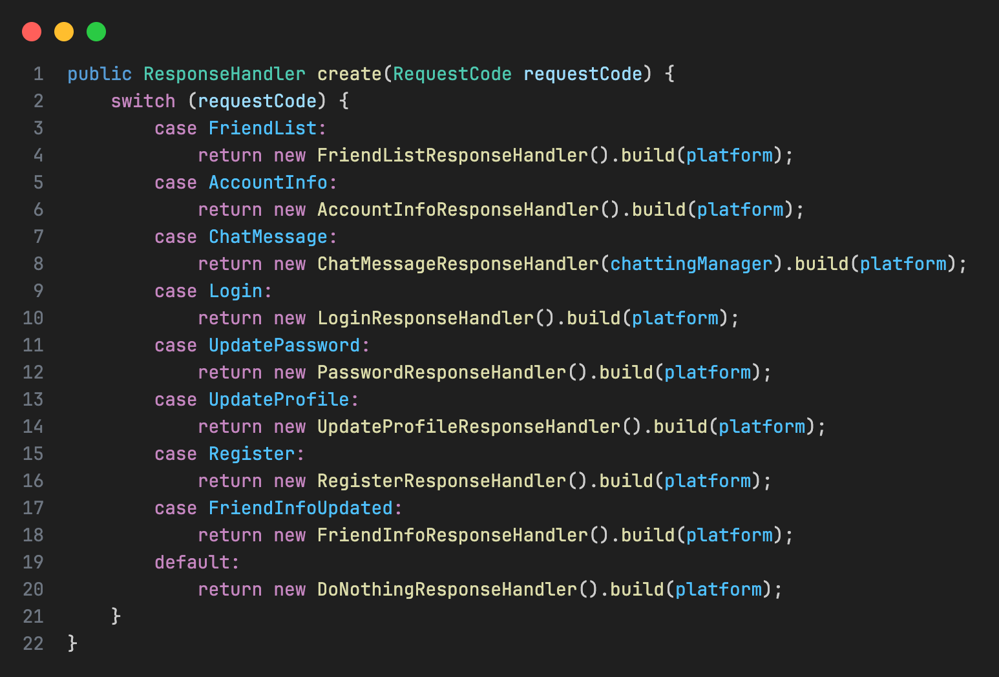
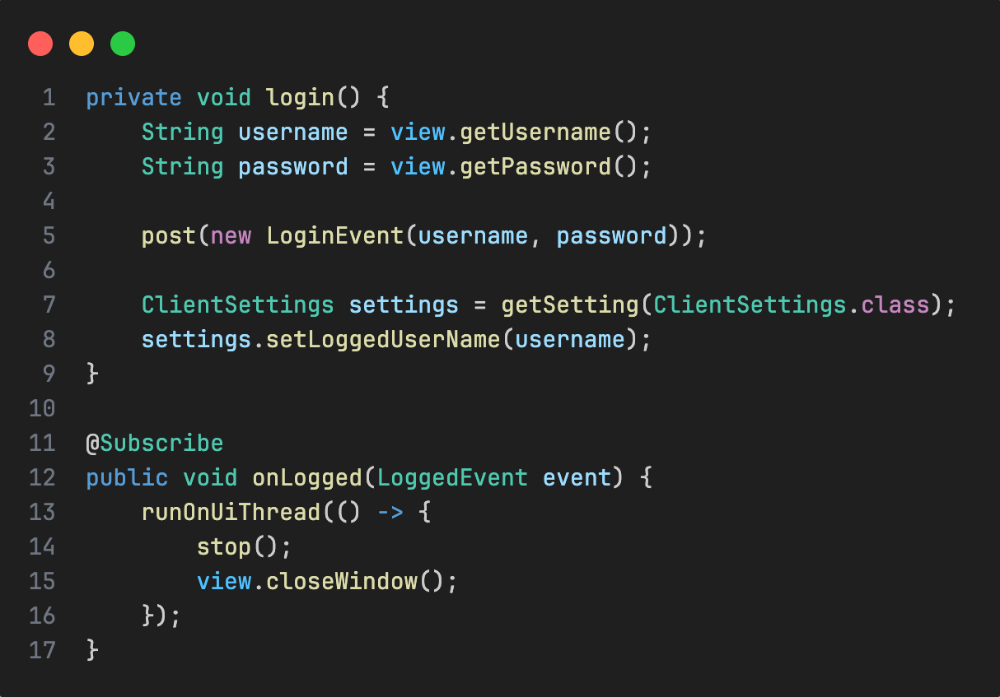
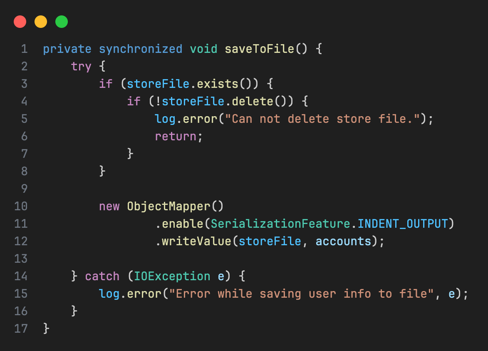
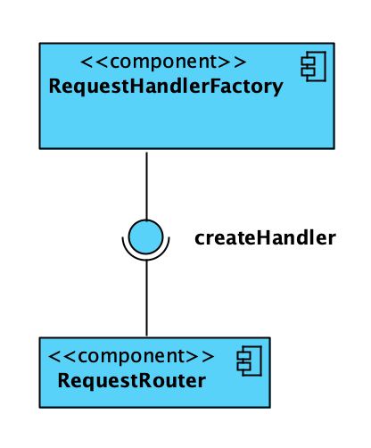

Design Pattern
Model-View-Presenter
UI und Logik sind sauber getrennt.
- View bleibt möglichst schlank
- Presenter steuert die Interaktion
- Gute Test- und Austauschbarkeit
Codequalität und Design Patterns im Chat-Socket-System
„Im ersten Teil ging es um Aufbau und Architektur. Jetzt geht es darum, was der Code qualitativ zeigt.“
Das System ist sauber getrennt und dadurch gut wartbar.
View / Presenter / Handler klar getrennt
Komponenten sind austauschbar
Gute Grundlage für Tests
Trennung von Verantwortlichkeiten funktioniert hier gut.
Der Code ist insgesamt gut lesbar und schnell erfassbar.
Sprechende Klassennamen
Kleine, fokussierte Methoden
Kontrollfluss meist gut nachvollziehbar
Neue Anforderungen lassen sich oft mit wenig Risiko ergänzen.
Erweiterungen sind vergleichsweise einfach
Factory-Prinzip unterstützt Anpassungen
Neue Views lassen sich sauber ergänzen
Nicht alles ist problematisch – aber genau hier wird die Wartbarkeit bei Wachstum angreifbar.
Zentrale Erzeugungslogik
Entkopplung vs. Nachvollziehbarkeit
Speicherineffizienz
Zu komplex für einfache Aufgaben
Veraltete Hash-Algorithmen
Die Handler-Erzeugung funktioniert, skaliert aber schlecht.
Bessere Richtung: Map / Registry statt wachsendem switch


Vorteil
Lose Kopplung
Nachteil
Schwerer nachzuvollziehen
Starke Entkopplung hilft – macht den Ablauf aber schwerer greifbar.
Die Speicherung ist funktional, aber nicht effizient.

Für einfache Aufgaben wird teils unnötig komplex gearbeitet.
Reflection für simple Settings
Erhöhte Komplexität
Verstoß gegen das KISS-Prinzip
„Nicht alles muss maximal generisch sein.“
Beim Passwort-Handling gibt es einen klaren Schwachpunkt.
Veralteter Algorithmus
Fehlende Absicherung
Erhöhte Risiken bei Angriffen
Technisch funktional, sicherheitlich aber kritisch.
Im Code lassen sich mehrere sinnvolle Design Patterns erkennen.
Objekterzeugung wird zentral gekapselt.

UI und Logik sind sauber getrennt.
Komponenten kommunizieren über Events statt über direkte Aufrufe.

Das System zeigt eine solide Architektur-Basis – mit klaren Stärken, aber auch einigen Risiken bei Wachstum.
Gute strukturelle Grundlage
Sinnvolle Design Patterns
Schwächen bei Skalierung, Nachvollziehbarkeit und Security
„Die Architektur trägt das System gut – einzelne technische Entscheidungen könnten langfristig aber problematisch werden.“